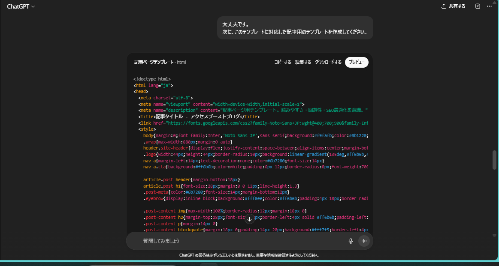

SEO
AI
Chat-GPT
ブログ
Chat-GPTにブログのデザインを考えてもらった！
自分には芸術センスがないため(右上の各URL参照)、Chat-GPTにデザインを考えてもらいました。
コードを出力
まずは、Chat-GPTに指示を出します。次のような感じです。
できるだけアクセス数を稼げるような、ブログ用のWebページのデザインを考え、CSSで出力してください。
そうすると、HTMLにCSSが入った状態のコードが出てきます。これをトップページとします。
CSSのみだった場合は、別途HTMLをお願いしましょう。

次に、記事のページのCSSをお願いします。次のような感じです。
次に、このテンプレートに対応した記事用のテンプレートを作成してください。
さっきと同様に、HTMLにCSSが入った状態のコードが出てきます。
コードの修正
動作や見栄えに影響がある部分だけ修正します。
最初は、TwitterとFacebookとLINEになっていましたが、FacebookをThreadsに変更しました。
また、コードが用意されていなかったので、共通化を考え、次のようなタグに変更しました。
<div class="share">
<a href="https://twitter.com/share?ref_src=twsrc%5Etfw" class="btn btn-twitter" data-show-count="false">Twitterでシェア</a><script async src="https://platform.twitter.com/widgets.js" charset="utf-8"></script>
<a href="https://www.threads.net/intent/post?text=" target="_blank" class="btn btn-th" onclick="this.href += document.title + '%0A%0D' + window.location.href;">Threadsでシェア</a>
<a href="https://social-plugins.line.me/lineit/share?url=" class="btn btn-line" onclick="this.href += window.location.href + '&text=' + document.title;">LINEでシェア</a>
</div>
ThreadsとLINEに関しては、リンクをクリックする際に、onclickでこのページのタイトルとURLを追加しています。
PHPが使える環境であれば、どこかにechoを並べた関数を配置し、呼び出すようにしておくと、修正が楽です。 github pagesだと使えません。
CSSの修正
必要に応じて、CSSも修正します。
自分の場合は、
- codeタグが見づかったので、原因である背景色を削除
- 将来的に使うh3タグを追加
をしました。
テキストとURLを書き換えて完成！
最後に、Chat-GPTが入れたテンプレ用の文章の書き換えと、URLの変更を行います。
自分の場合は、
- 定期購読の削除
- フッターのコピーライト、既約を削除
- 内容を考え記事の作成
をしました。
まとめ
Chat-GPTにCSSと対応するテンプレートを考えてもらいましたが、芸術センスも色彩感覚もない自分でも綺麗にページを作成することができました。
ページ右上のリンク「展示」先も、Chat-GPTにCSSを考えてもらいました。こちらは、「美術館のサイトっぽく」とお願いしています。
他にも、
- プログラミング作成(TwitterかThreadsかYouTubeで投稿)
- 大学生のプログラミング手伝い(Twitter)
- クイズ作成(TwitterかThreadsで投稿)
- 下手な絵展示(InstagramかThreadsかYouTubeで投稿)
- 数学作問(TwitterかThreadsで投稿)
- ミニゲーム作成(TwitterかThreadsかYouTubeで投稿)
- ボカロ関係のつぶやき(Twitter)
の活動をしているので、閲覧と拡散よろしくお願いします！